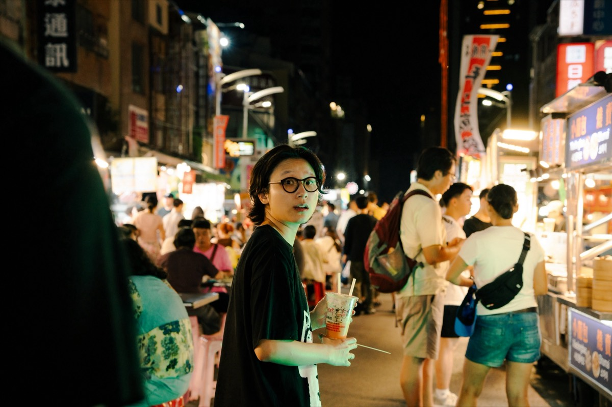
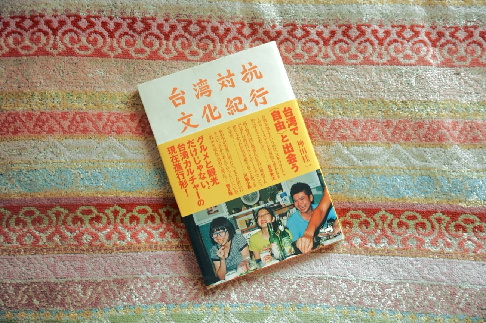
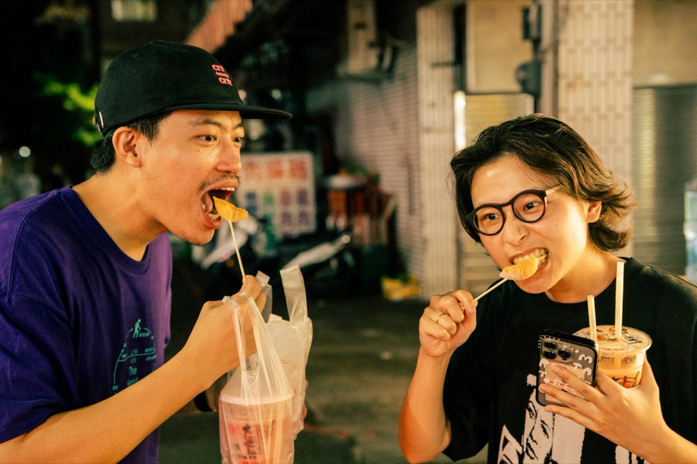
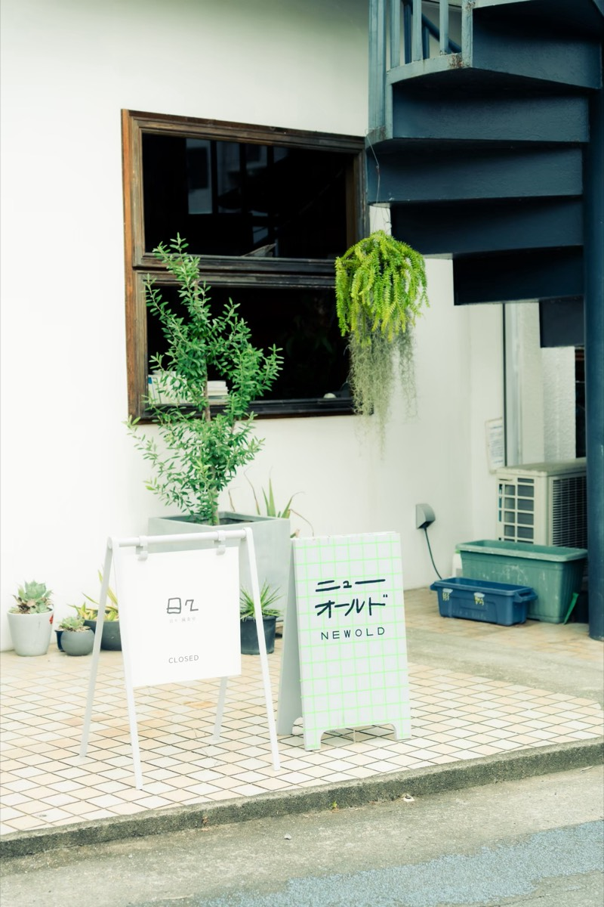
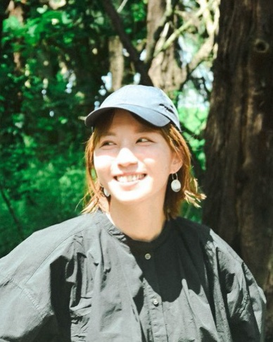
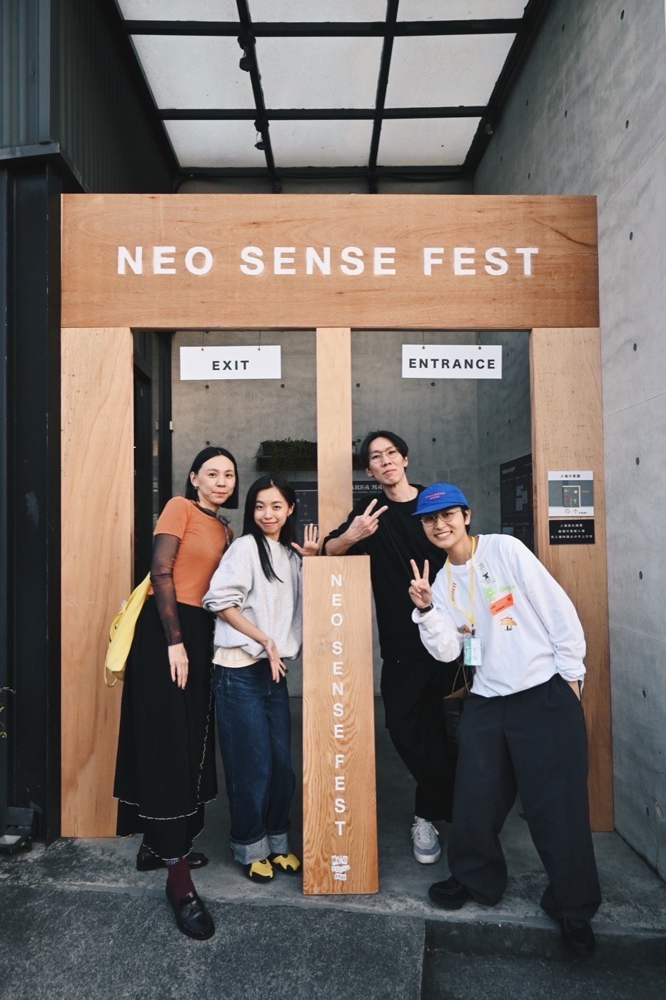
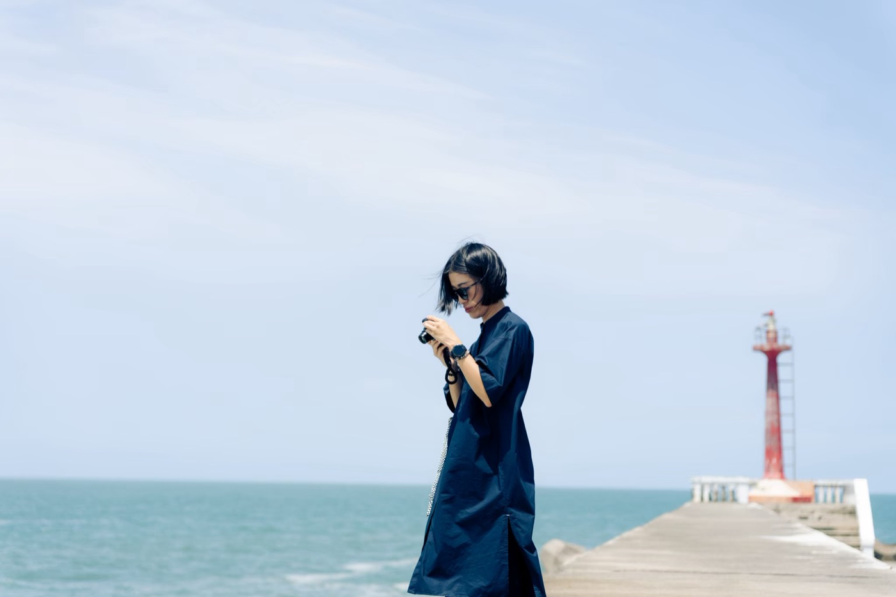
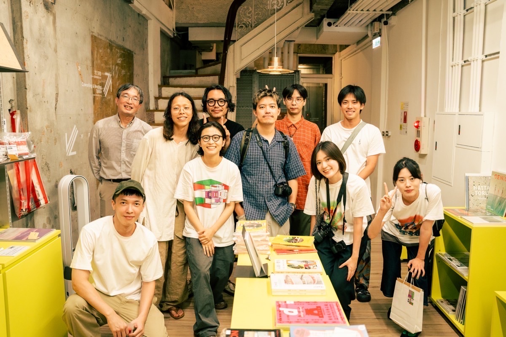

Taiwan× 台灣 × 熊本 ×Kumamoto
台湾と熊本を、私たちの目線で。
観光ガイドには載らない、同世代の「ふだんの暮らし」から、二つの街の近さを探しています。
 2026.11.7 SAT・8 SUN＠熊本駅前アミュ広場
2026.11.7 SAT・8 SUN＠熊本駅前アミュ広場

×
熊本
Chapter 00 — Hello
台湾と熊本を、私たちの目線で哈囉，台灣 × 熊本
熊本学生倶楽部が、台熊祭々の一企画として作る、zine（ジン）づくりのプロジェクト。観光ガイドではなく、二つの土地で暮らす若者の「1日」から、文化のつながりを見つけて一冊に残します。
このプロジェクトについて →What is a zine?
zineって何？什麼是 ZINE
ZINE（ジン）
個人や少人数で作る、雑誌のような自主制作の冊子のこと。広告やルールに縛られず、「これを伝えたい」を自分たちの形で一冊にできます。
THE ZINE『touch』
INSIDE背中合わせの3部構成
左綴じ向きから熊本編
熊本市 → 阿蘇 → 菊陽 → 甲佐
＋ コラム
Thanks謝謝
二つの編が交わるページ
右綴じ向きから台湾編
ziin・Ken ／ 密着の4人
＋ コラム
- 構成熊本編と台湾編を背中合わせにした、3部構成
- 中身熊本4エリアの取材／台湾の人々／1日密着の4人／コラム
- 発表・販売台熊祭々 11/7(土)・8(日) 熊本駅前アミュ広場
- 仕様・価格近日公開
観光ガイドではなく、少しニッチだけれど確かにそこにある魅力や、「なぜここに熊本と台湾のつながりがあるのか」を、若者の視点で噛み砕いて一冊に。
Inside the ZINE
zineの中身背中合わせの3部構成
表からも、裏からも読める「背中合わせ」のつくり。左綴じ向きから開くと熊本編、右綴じ向きから開くと台湾編。二つが交わる真ん中に、Thanksページがあります。
左綴じ向きから開く
熊本編KUMAMOTO
- 熊本市
- 阿蘇
- 菊陽
- 甲佐・美里・山都
- コラム『台湾対抗文化紀行』について ほか
交わるところ
Thanks謝謝
熊本編と台湾編が出会う、真ん中のページ。
右綴じ向きから開く
台湾編TAIWAN
- ziin・Kenの紹介
- 1日密着の4人Emma → 婉寧 → 阿澤 → 李杰恩
- コラム阿蘭・FRANK・承漢
Get the ZINE
zineを手に入れるには如何取得
完成したzineは、まず熊本で。そのあと、台湾の本屋さんへ。
台湾でもNEXT
12月、台湾の独立書店へ
熊本から台湾へ、一冊を届けます。
仕様・価格SOON
近日公開
決まりしだい、このサイトと、下のInstagramでお知らせします。
Contents
目次目次
- 01
プロジェクトAbout 關於我們
なぜ作るのか。きっかけ、二つの街、感謝。

- 02
若者の1日Route 年輕人的一天
地図でたどる、熊本と台湾の1日。

- 03
熊本取材Kumamoto 熊本採訪
熊本で見えた、台湾とのつながり。

- 04
台湾の人々People 台灣人物
現地で出会った同世代の暮らし。

- 05
NEO SENSE FESTCollab 新感覺市集
2026.12.12・13 台湾・員林で開催。台湾取材をアテンドしてくれた。

- 06
台湾 密着の1日Day 跟拍一天
4人の1日に、ぴったりついて歩いた。

- 07
台湾フォトPhotos 台灣影像
私たちが見た台湾の風景。
- 08
チームTeam 編輯部
7人のメンバーと、制作の舞台裏。

Follow
つながる追蹤我們
制作の様子やイベントの情報は、Instagramでお知らせしています。